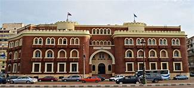

الدراسه في الجامعه الاسكندريه

جامعة الإسكندرية هي إحدى أكبر الجامعات في مصر، وثالث جامعة أنشأت بعد جامعة القاهرة والجامعة الأمريكية في القاهرة. تضم جامعة الإسكندرية أكثر من 20 كلية تدرس مختلف أنواع العلوم الاجتماعية والطبية والهندسية والرياضية وغيرها، وللجامعة فروع أخرى في مصر خارج مدينة الإسكندرية في دمنهور ومطروح، ومن المقرر إنشاء فروع أخرى للجامعة خارج مصر في جوبا في جنوب السودان، وفي إنجامينا عاصمة جمهورية تشاد[1]، وتتبع جامعة الإسكندرية مثل معظم باقي الجامعات المصرية لإشراف المجلس الأعلى للجامعات، وهو جهاز حكومي يقوم برسم السياسة العامة للتعليم بالجامعات المصرية
نضره عامه حول الجامعه
تأسست جامعة الإسكندرية عام 1942 ، وهي مؤسسة تعليمية عامة غير ربحية تقع في المناطق الحضرية في مدينة الإسكندرية (يبلغ عدد سكانها أكثر من 5،000،000 نسمة). لدى هذه المؤسسة أيضًا فروع جامعية في الموقع (المواقع) التالية: مطروح. معتمدة رسميا و / أو معترف بها من قبل وزارة التعليم العالي ، مصر ، جامعة الإسكندرية (AU) هو كبير جدا (نطاق التحاق uniRank: أكثر من 45000 طالب) مؤسسة التعليم العالي مختلطة. تقدم جامعة الإسكندرية (AU) دورات وبرامج تؤدي إلى الحصول على درجات علمية معترف بها رسمياً مثل شهادات البكالوريوس (مثل الشهادات والدبلومات ودرجات الزمالة أو المؤهلات) ودرجات البكالوريوس ودرجات الماجستير ودرجات الدكتوراه في العديد من مجالات الدراسة. انظر مستويات درجة uniRank ومجالات دراسة المصفوفة أدناه لمزيد من التفاصيل. لدى مؤسسة التعليم العالي هذه منذ 76 عامًا سياسة قبول انتقائية تعتمد على السجل الدراسي والدرجات الدراسية السابقة للطلاب. نطاق معدل القبول هو 80-90 ٪ مما يجعل هذه المؤسسة المصرية للتعليم العالي مؤسسة أقل انتقائية. المتقدمون الدوليون مؤهلون للتقدم للتسجيل
مكانة الجامعة عالميا
طبقا لمؤشر Times Higher Education تحتل جامعة الإسكندرية المرتبة الـ 93 ضمن أفضل مائة جامعة لدول الأسواق الناشئة حول العالم، بما فيهم دول "البريكس-BRICS" وهم: "روسيا، البرازيل، الهند، الصين وجنوب إفريقيا"، وذلك وفقاً لتصنيف التايمز البريطاني-THE للجامعات لعام 2014.
وقد أحتلت الجامعة المرتبة 303 على مستوى العالم
هام
قد تختلف سياسة القبول ومعدل القبول حسب مجالات الدراسة ، ومستوى الشهادة ، وجنسية الطالب أو الإقامة ومعايير أخرى. يرجى الاتصال بمكتب القبول في جامعة الإسكندرية للحصول على معلومات مفصلة عن سياسة اختيار القبول ومعدل القبول. معلومات القبول المذكورة أعلاه هي معلومات إرشادية فقط وقد لا تكون كاملة أو حديثة